硬件
咸鱼80元购入
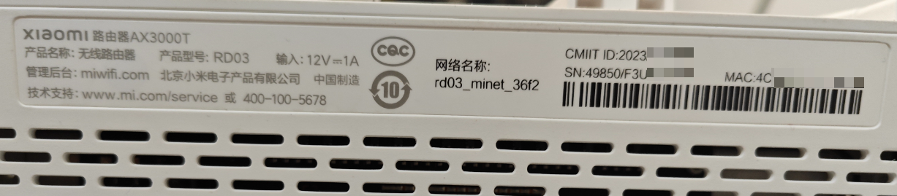
软件
来自恩山论坛（基本没起到作用，工具包里的全是v2版本的固件，甚至解锁工具过时，导致备份以及后续操作全部失败）
https://www.right.com.cn/forum/forum.php?mod=viewthread&tid=8452623&highlight=AX3000T
1 | 百度网盘 |
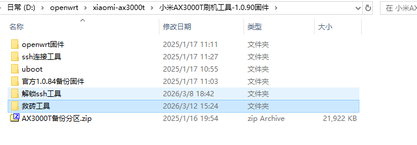
ssh解锁工具用最新版本：https://github.com/openwrt-xiaomi/xmir-patcher
uboot：https://github.com/hanwckf/bl-mt798x
https://github.com/hkint/xiaomi-ax3000t-immortalwrt-hanwckf-firmware-build
第三方固件
https://firmware-selector.immortalwrt.org/
https://downloads.immortalwrt.org/
https://openwrt.org/about/history
https://fw.koolcenter.com/iStoreOS/
刷入第三方固件
原厂固件降级
reset后，使用网线连接，登录发现版本是MiWiFi 稳定版 1.0.98。要先降级
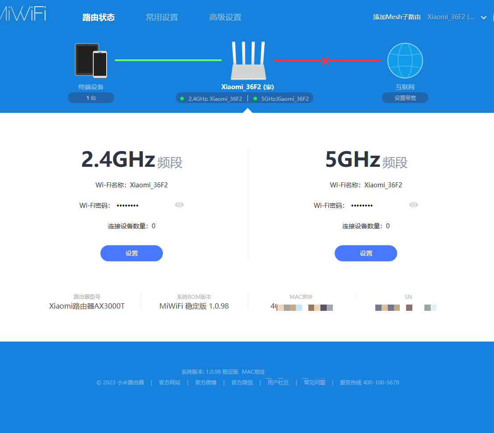
关闭其他网卡
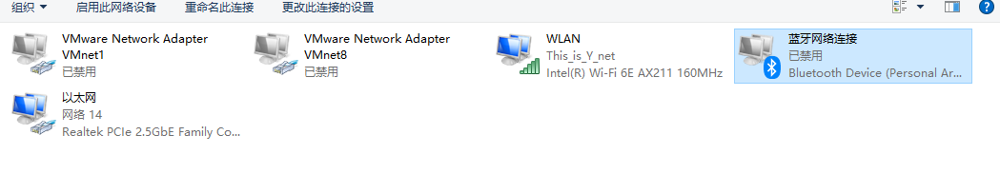
打开 救砖工具\MIWIFIRepairTool\MIWIFIRepairTool.x86.exe 选择 官方1.0.84备份固件\小米AX3000T官方固件rd03_firmware_1.0.84.bin固件.点击下一步，确定网卡正确。
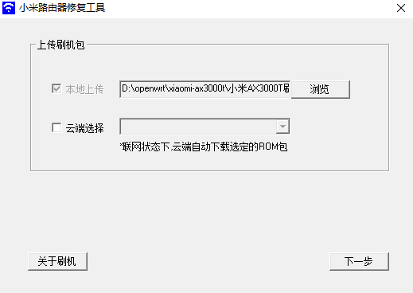
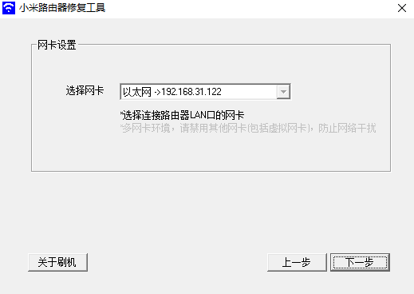
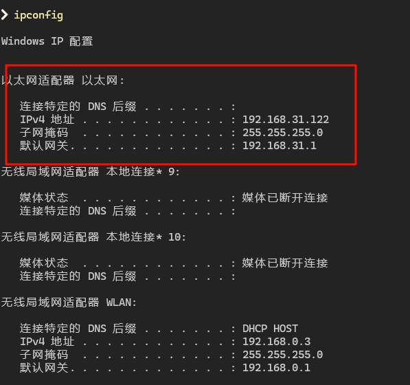
根据提示，断开路由器电源，按住Reset键：再接通电源，直到橙灯闪烁松开Reset键，闪烁后松开，软件就会输出日志提示刷入成功了。然后就可以退出软件，然后断电重启路由器了。
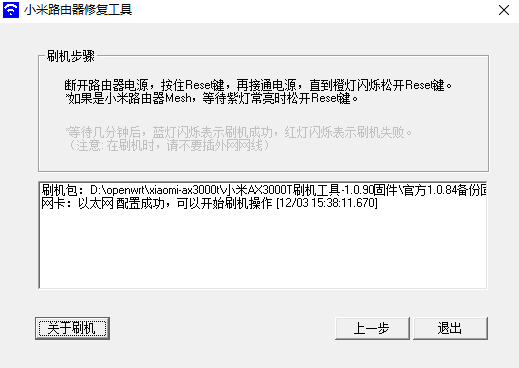
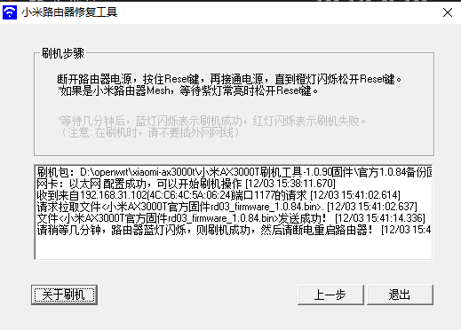
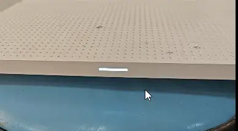
初始化路由器后，可以看到rom版本已经是MiWiFi 稳定版 1.0.84了
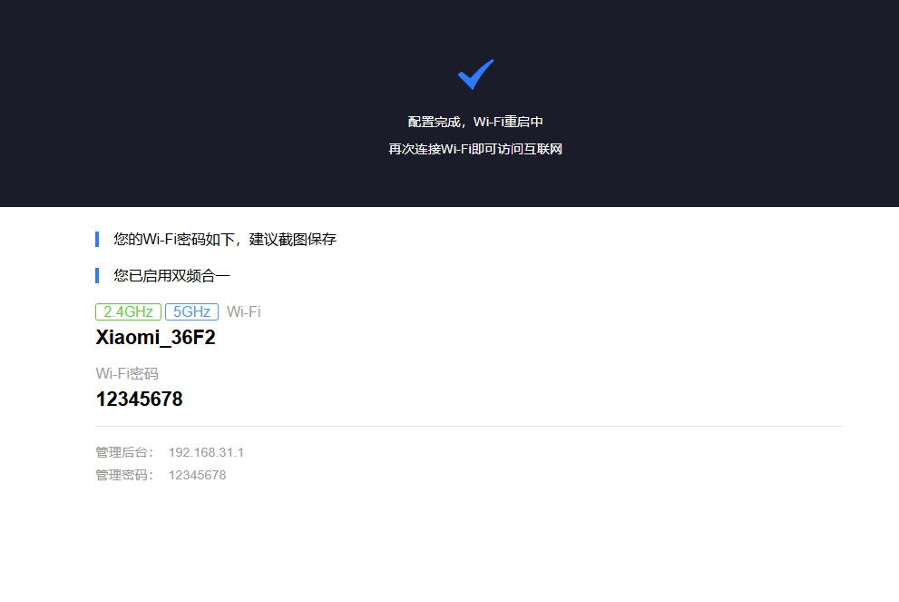
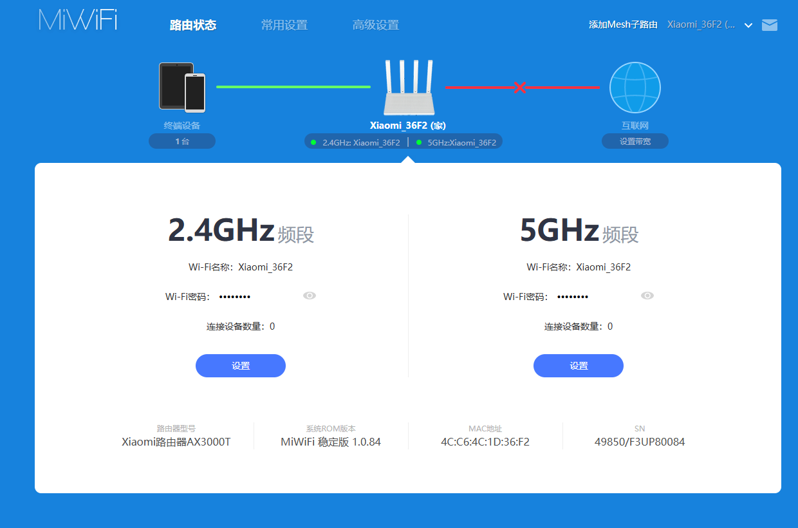
解锁ssh
运行 解锁ssh工具\xmir-patcher-main\run.bat 先【1】设置ip，然后【2】连接，输入web管理后台的密码等待即可
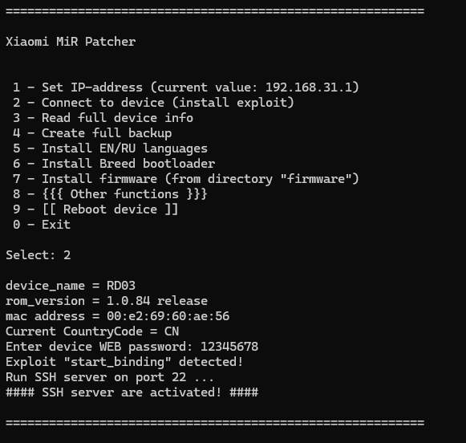
这里我按4备份文件一直提示失败ERROR: SSH execute command timed out! CMD: “dd if=/dev/mtd0 of=/tmp/mtd_dump.bin”.所以我想着先去【8】-【2】修改root密码，然后使用MobaXterm连接上后，手动备份
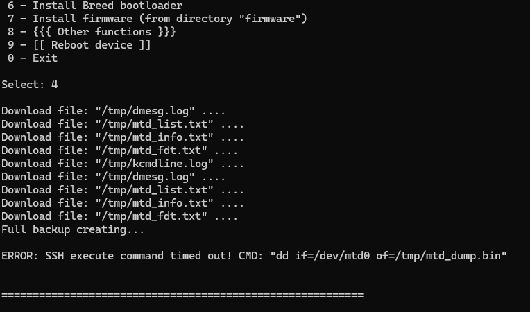
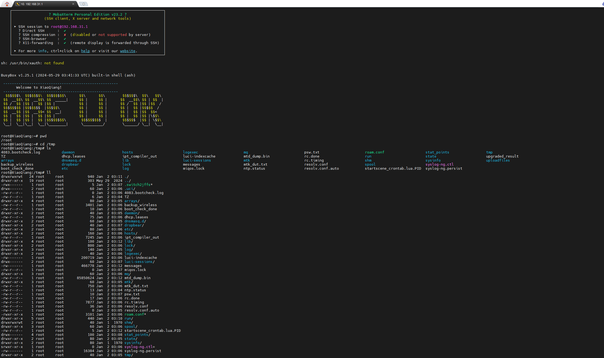
结果在这里建立的ssh没一会就自己掉了，去查了一下，https://www.right.com.cn/forum/thread-8413185-1-1.html，估计是下载的解锁ssh脚本版本比较老，随即去下载最新的版本https://github.com/openwrt-xiaomi/xmir-patcher
遂一切顺利，【2】解锁ssh，【4】备份，【6】固化ssh，【8】-【2】修改ssh密码
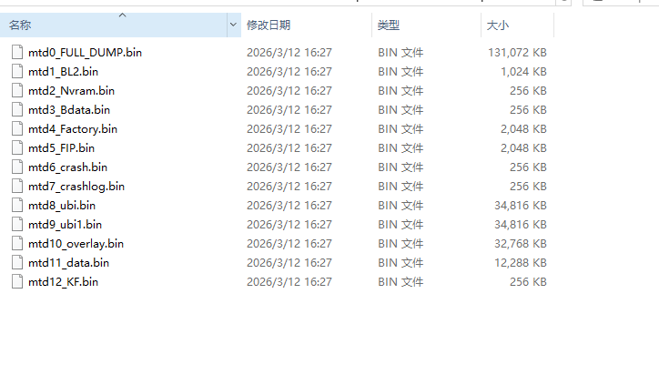
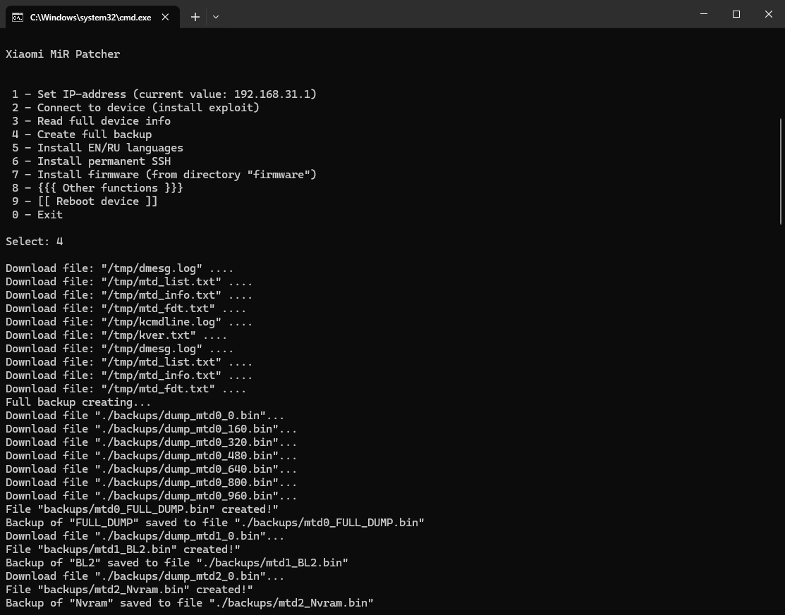
刷入uboot
这一步卡了我有点久，主要原因在于这个AX3000T有三个版本，我不清楚我这个是哪个版本，而网络上的信息又错综复杂。所以尝试了好几次才成功，
在消磨了大量时间后，加上设备背后的CMIIT ID2023开头，我确认我这台AX3000T是v1版本。在选择固件和uboot时，注意要避开an8855这个字眼。
uboot一开始选择的hanwckf大佬https://github.com/hanwckf/bl-mt798x/的mt7981_ax3000t-fip-fixed-parts-multi-layout.bin
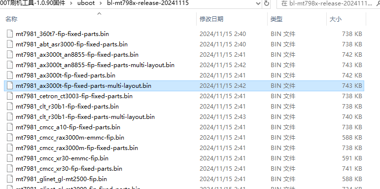
在这个版本的uboot下，成功刷入了immortalwrt-23.05.3-mediatek-filogic-xiaomi_mi-router-ax3000t-initramfs-factory.ubi版本，但是此时是一个initramfs临时系统。所以需要升级为sysupgrade版本。而就是在这里，卡了我很久，刷入immortalwrt-23.05.3-mediatek-filogic-xiaomi_mi-router-ax3000t-squashfs-sysupgrade.bin后，路由器无限重启
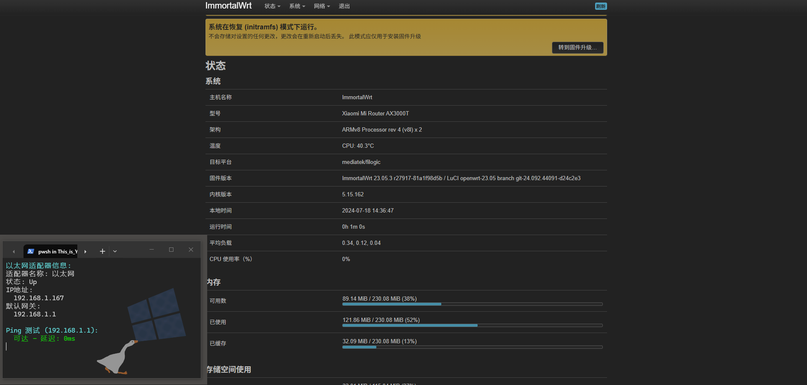
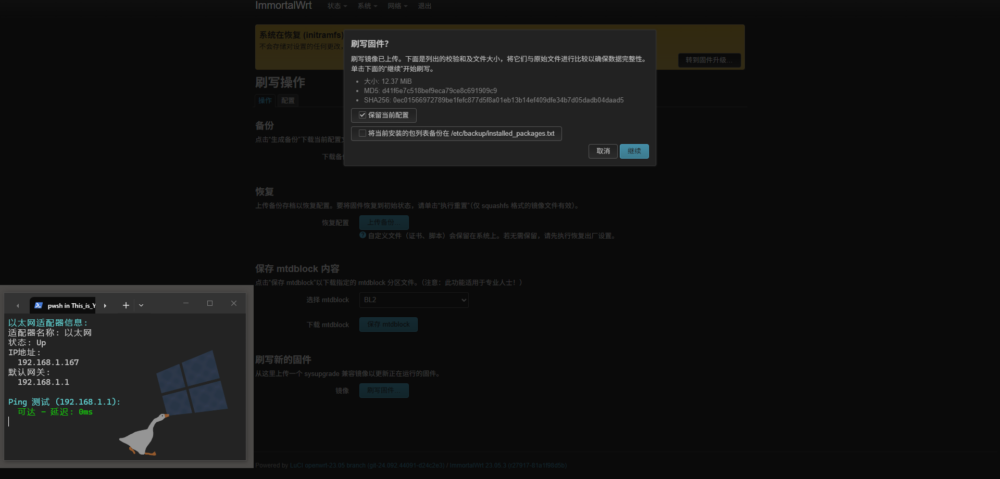
最后怀疑人生决定换一个uboot版本，这次选择的是hkint大佬的https://github.com/hkint/xiaomi-ax3000t-immortalwrt-hanwckf-firmware-build
同时使用他的ImmortalWrt
这次总算是成功进入系统
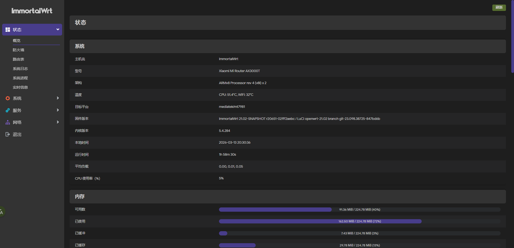
其实算下来，在uboot这里花了一天时间。回想起来，其中有个可能比较玄学的问题，我昨天晚上成功刷入initramfs临时系统后，由于过于兴奋，把macmini的网线也插在路由器上，然后去speedtest.cn测了一下速。
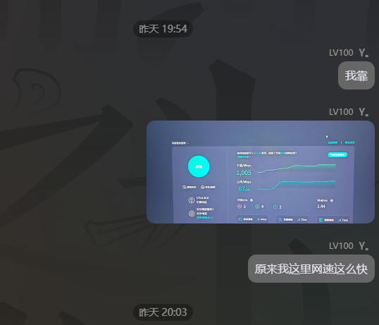
后面由于无法刷入sysupgrade版本，折腾了一个晚上，最后愤愤入睡。
第二天从换uboot版本，到换各种固件，从ImmortalWrt到kwrt到官方固件，折腾了一整天，全部失败，甚至重新刷回initramfs临时系统也失败，一直到晚上6点多，用尽全身力气的我，可能是已经投身玄学，又可能是鬼使神差，我把macmini那根网线从路由器上拔下来，然后再刷了一次initramfs临时系统，然后一次成功，不过同样无法刷入同版本下的sysupgrade版本固件，但是因为已经折腾了一整天，我的文件夹里已经有了一堆各种各样的固件，在简单尝试了几次后，就得到了我现在的版本。
为了方便确认固件是否刷入成功，我还用ai写了一个监测网卡和ip的powershell脚本。效果如下
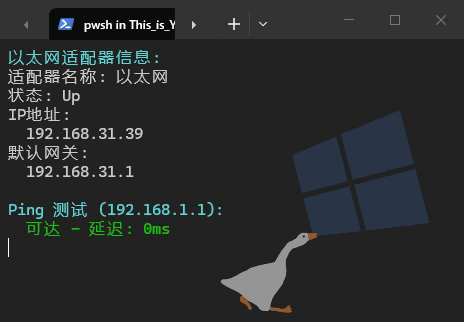
1 | while ($true) { |
安装各种插件
其实目前就装了一个科学上网的插件
immortalwrt自带一个软件包管理的功能，非常好用。在这里有两个支持科学上网的插件，passwall和openclash。花了半天的时间把两个都体验了一下，从软件包大小和实用性上综合考虑，最后决定用openclash。
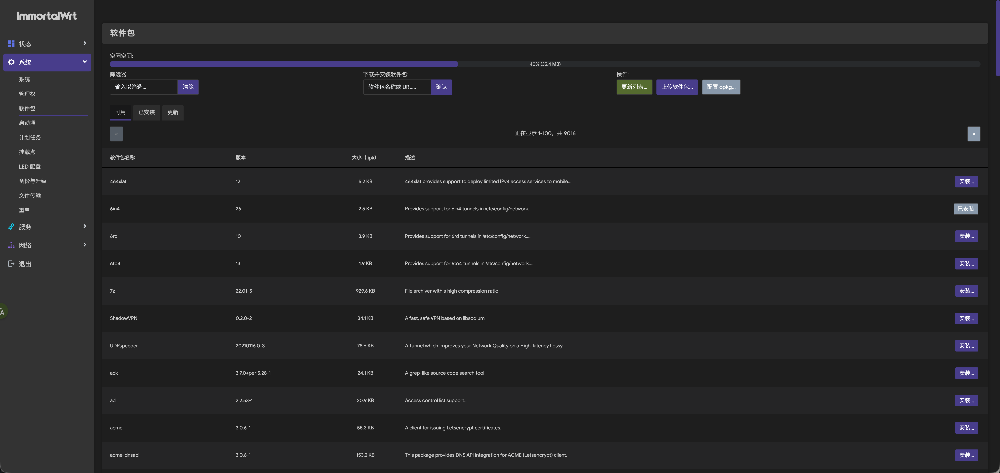
在软件包标签页里安装时，可能会出现报错Error: XHR request aborted by browser，根据https://global.v2ex.co/t/1126370中的提示，这应该只是opkg 安装时间太长，超过了 XHR 的超时时间，所以浏览器端报错了，但是 opkg 后台还在运行的，实际安装完成了。可以稍微多等一会然后在搜索一下openclash看一下右边的状态，
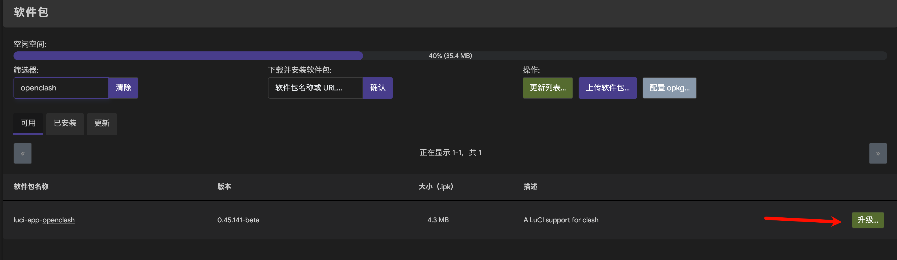
确认安装成功后，可能需要重启一下设备才能在服务菜单下看到，进去后先去【PluginSettings（插件设置）】-【版本更新】中更新一下内核和客户端（现在只剩一个meta内核了）。从软件包中下载的版本可能不是最新的（我这里手动安装0.47版本，这里的0.45版本居然还提示我升级），下载后会在/tmp目录下，在ssh连接上路由器后，通过opkg install /tmp/openclash.ipk进行安装。
最后就是这个状态
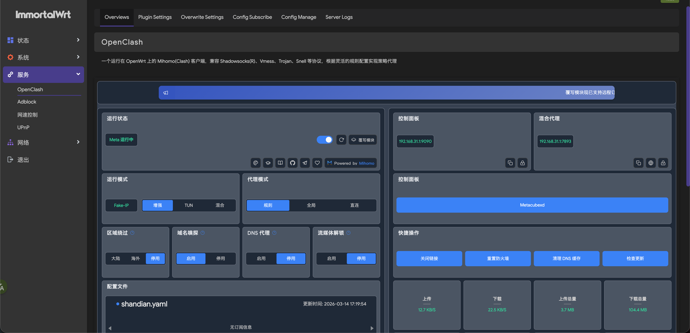
使用很简单，基本就是先去【ConfigSubscribe】或者【ConfigManage】中填写订阅地址或上传自己的节点文件，在拿到节点后，在【Overviews】中点击按钮运行即可，有啥问题记得多看标签页的提示和在【Server Logs】中看日志。
gemini分流
这里我主要想记录一下我自己的需求是怎么解决的
首先因为需要使用gemini，它不支持速度较快的香港节点，为了避免每次都手动切换美国节点，我需要有一个分流的功能，而我的机场基本没划分策略组，所以解决方案分两步走，
- 将所有支持gemini的节点拿出来，单独划分为一个策略组
- 在openclash中设置一个规则，将gemini相关的流量全部走上面的策略组
手动添加
首先第一步，找来找去有两个解决方法
将订阅的配置文件在【ConfigManage】上传后，在下面的【配置文件编辑】里，手动添加一个proxy-groups，name自取，proxies选择自己需要的节点名字，其他参数可以直接照着上面自带的proxy-groups抄就好了。
1
- { name: gemini, type: select, proxies: ['Lv2 美国 01 [1.5]', 'Lv2 美国 02 [1.5]', 'Lv2 美国 03 [1.5]', 'Lv2 美国 04 [1.5]', 'Lv2 美国 05 [1.5]', 'Lv2 美国 06 [1.5]', 'Lv2 新加坡 01 [1.5]', 'Lv2 新加坡 02 [1.5]', 'Lv2 新加坡 03 [1.5]', 'Lv2 新加坡 04 [1.5]', 'Lv2 新加坡 05 [1.5]', 'Lv2 新加坡 06 [1.5]'], url: 'http://www.gstatic.com/generate_204', interval: 7200 }
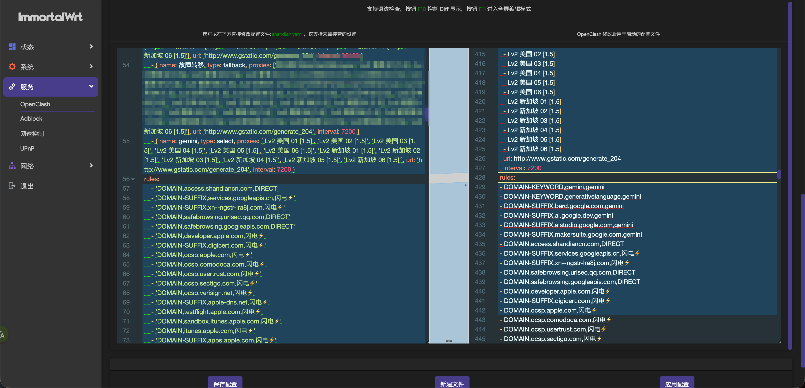
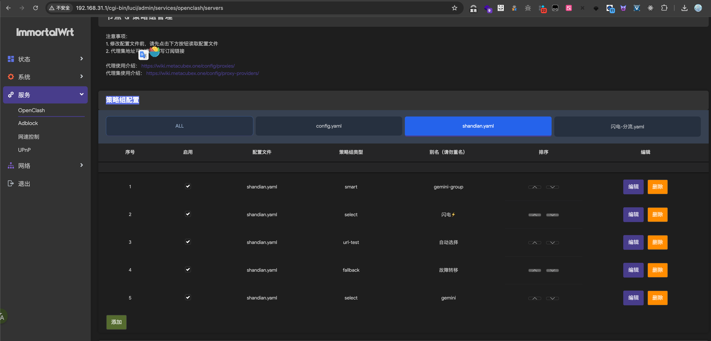
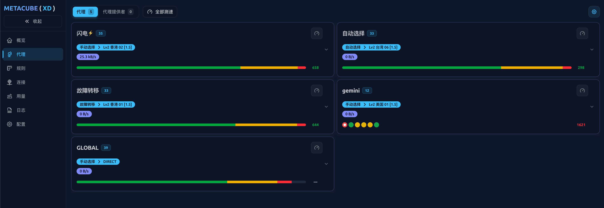
题外话：这里访问的链接其实是一个叫【Onekey CreateRule】的菜单标签页，但是不知道是什么原因，我这里的标签页没有这个了，但是可以直接通过地址访问，在里面查看订阅的策略组配置和节点配置一切正常。但是手动添加策略组又是失败的。这也是我为什么会大费周章用这样的方式解决问题，其实这个需求用这里的策略组里的功能就能很快的解决。
- 说回正题，在确认策略组已经添加后，在【OverwriteSettings】-【规则设置】中勾选自定义规则并添加如下规则。之后重启openclash，就可以看到相关规则了
1 | rules: |
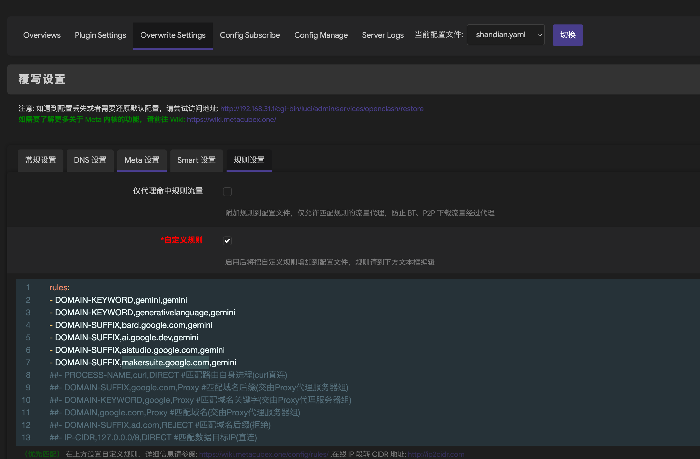
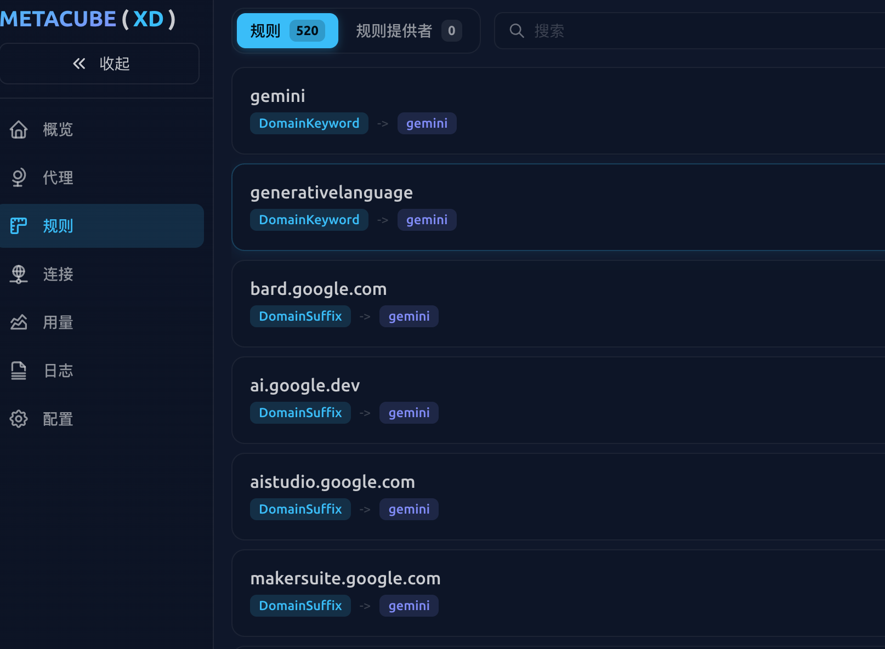
这个方法有个缺点就是每次需要更新订阅时，就要重新进行第一步操作
自动转换
这个方法可以解决上面说的缺点，但是稍微麻烦一些
使用subconverter进行在线转换
已删除无参考意义
参考
https://www.getpicion.com/archives/1753
https://www.right.com.cn/FORUM/thread-8445158-1-1.html